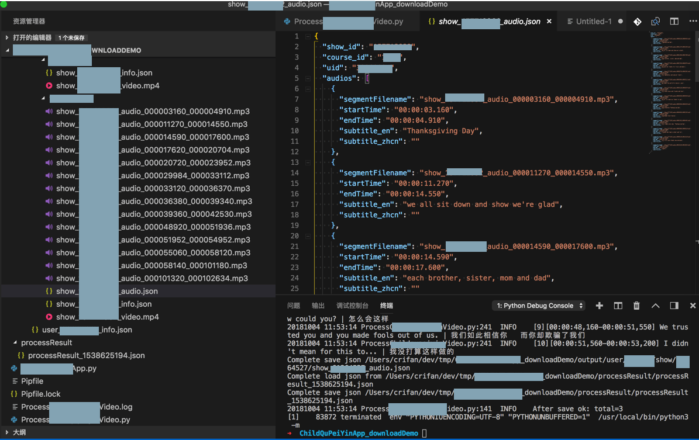

视频
从视频中提取出音频mp3文件
import os
import logging
import subprocess
videoFullpath = "show_157712932_video.mp4"
startTimeStr = "00:00:11.270"
# startTimeStr = "%02d:%02d:%02d.%03d" % (startTime.hours, startTime.minutes, startTime.seconds, startTime.milliseconds)
endTimeStr = "00:00:14.550"
# endTimeStr = "%02d:%02d:%02d.%03d" % (endTime.hours, endTime.minutes, endTime.seconds, endTime.milliseconds)
outputAudioFullpath = "show_157712932_audio_000011270_000014550.mp3"
# extract audio segment from video
# ffmpeg -i show_157712932_video.mp4 -ss 00:00:11.270 -to 00:00:14.550 -b:a 128k show_157712932_audio_000011270_000014550.mp3
if not os.path.exists(outputAudioFullpath):
ffmpegCmd = "ffmpeg -i %s -ss %s -to %s -b:a 128k %s" % (videoFullpath, startTimeStr, endTimeStr, outputAudioFullpath)
subprocess.call(ffmpegCmd, shell=True)
logging.info("Complete use ffmpeg extract audio: %s", ffmpegCmd)
可以从mp4中提取出mp3音频：
